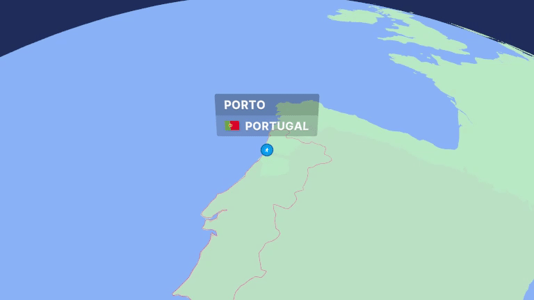

Planeje sua peregrinação com os melhores itinerários e dicas exclusivas.
Explorar CaminhosO Caminho de Santiago é uma peregrinação com diversas rotas que levam a Santiago de Compostela. Nossa plataforma permite que você personalize sua viagem e explore diferentes caminhos.
O Caminho de Santiago é uma peregrinação com diversas rotas que levam a Santiago de Compostela. Nossa plataforma permite que você personalize sua viagem e explore diferentes caminhos.
Descubra novos horizontes e viva experiências incríveis.
Encontre paz interior enquanto percorre os caminhos históricos.
Uma experiência transformadora para o corpo e a alma.